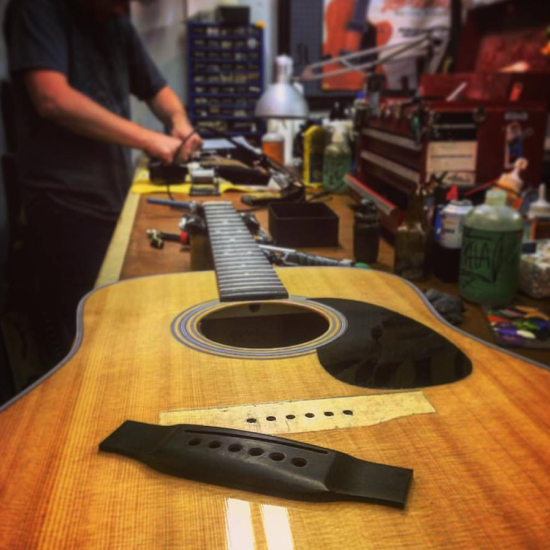
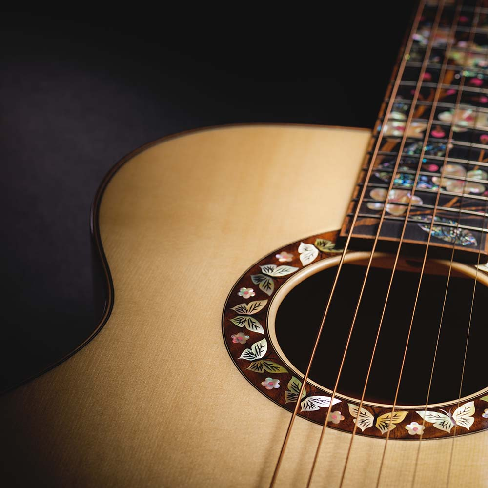
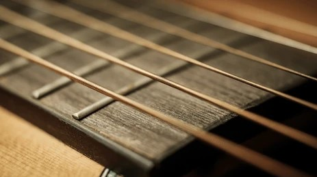

Costruzione
Strumenti realizzati a mano con attenzione a resa sonora, materiali, proporzioni e comfort.
Liuteria Lo Verde è un laboratorio che unisce gusto artigianale, attenzione al dettaglio e ascolto del musicista. Costruzione, riparazione e personalizzazione sono il centro del nostro lavoro.
Ogni strumento nasce da una scelta precisa dei materiali, da una lavorazione attenta e da un confronto concreto con chi lo suonerà. Il risultato deve essere bello, comodo, equilibrato e musicalmente vivo.
Progetti artigianali seguiti con cura, dal legno fino alla regolazione finale.
Interventi tecnici e restauri per riportare lo strumento alla sua piena funzionalità.
Soluzioni su misura per chi cerca uno strumento coerente con il proprio modo di suonare.
Ogni area ha una pagina dedicata ed è già pronta per essere popolata con contenuti, immagini e dettagli reali.
Strumenti realizzati a mano con attenzione a resa sonora, materiali, proporzioni e comfort.

Setup, manutenzione, restauro e interventi strutturali su strumenti da recuperare o ottimizzare.

Progetti su misura costruiti attorno a esigenze sonore, estetiche e tecniche specifiche.
Essere siciliani per noi non è solo una provenienza geografica: è un modo di dare peso alla mano, al tempo, ai materiali e all’identità delle cose costruite bene.
Il dettaglio non è un’aggiunta: è parte del risultato finale.
Ogni strumento deve avere una voce riconoscibile e una sua dignità estetica.
